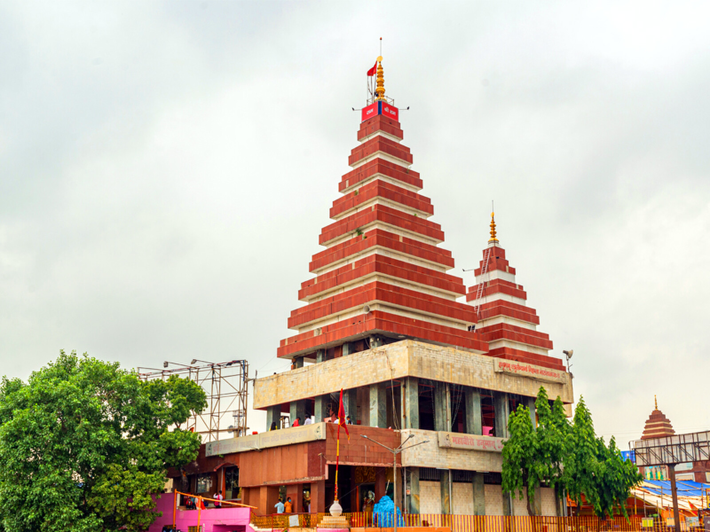
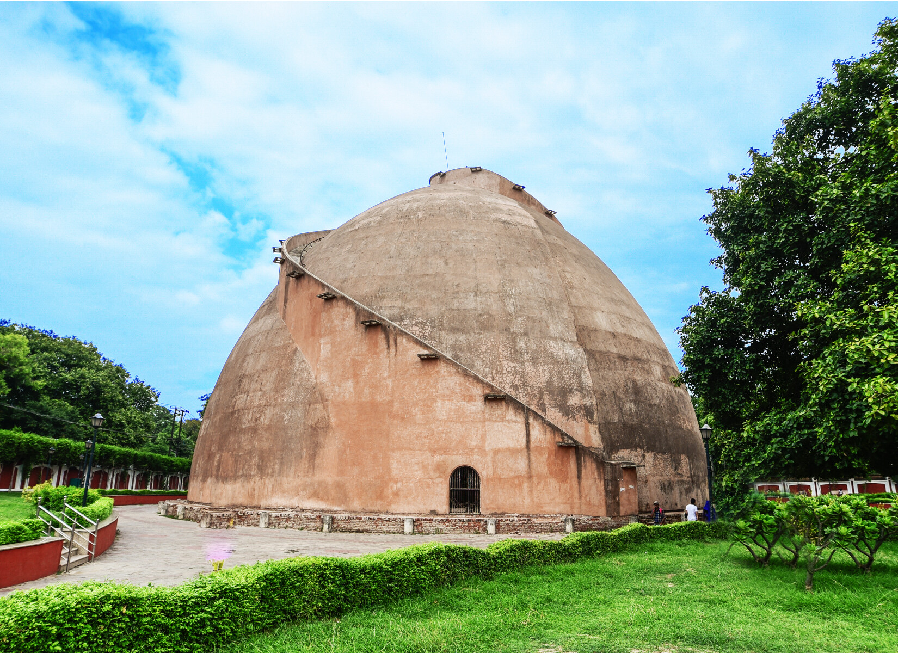

This is page containing information about some best places in Patna
For Exploring Patna kindly scroll
Mahavir Mandir
Mahavir Mandir, located near Patna Junction, is one of the most popular temples dedicated to Lord
Hanuman. This famous temple is a symbol of devotion and spirit and every day devotees come here with
their wishes, and they believe that Sankat Mochan fulfills their every wish. Many devotees also
recite
Hanuman Chalisa inside the temple.
On the auspicious occasion of Ramnavmi, huge crowds of devotees throng the Mahavir temple, which
makes
the view even more captivating. Another feature of the temple is its offerings, the naivedyam here
is
famous all over the country.
In the Mahavir temple, many ordinary people are treated at a minimal fee from the income donated by
the
devotees. Mahaveer Cancer Institute, Mahavir Arogya Sansthan, Mahavir Netralaya, and Mahavir
Vatsalya
Hospital are being run smoothly by this holy temple in the public interest. Whenever you come to
Patna,
visit the Mahavir temple.

Golghar
Golghar, an enormous granary, was built by Captain John Garstin for British army in 1786, after the
terrible impact of 1770 famine. The winding stairway around this monument offers a brilliant view of
the city and the Ganga flowing nearby.
It is pillar-less with a wall of thickness of 3.6 m at the base height of 29 m.. One can climb at
the top of the Golghar through the 145 steps of its spiral stairway around it. The spiral staircase
was designed to facilitate the passage of the workers who deliver their load through a hole at the
top, and descend the other stairs.
Built in the Stupa architecture, the building has a height of 29 m. It is pillar-less with a wall of
thickness of 3.6 m at the base. One can climb to the top of the Golghar via its 145-step spiral
stairway. The spiral staircase was designed to facilitate the passage of the workers who loaded and
unloaded the grain in the granary, who had to carry grain-bags up one flight, deliver their load
through a hole at the top, and descend the other stairs

Bihar Museum
Bihar Museum has embellished a multitude of artifacts and is a hub of historical knowledge. It is
located at Bailey Road Patna and is a favorite visiting spot. The museum is designed to bring the
limelight over the rich history and culture of India.
The interior of Bihar Museum is really appreciated. The premises here are clean and every statue
here defines its glorious past.
There is a specialized timing to visit the museum (10: 30 AM - 5:00 PM) and it is a perfect place to
hang out with friends or family. There are various sections in the museum and the most favorite part
for children is the artificial wildlife sanctuary
The Bihar Museum has several galleries. These include the Orientation gallery, the children gallery,
the regional gallery, the contemporary gallery, the historical art galleries, the Bihari Diaspora
gallery and the visible storage gallery. The exhibits on different subjects are displayed in
separate galleries. Each gallery is huge and has many artifacts on display including ones dating
back to the fourth centur
Takhat Sri Harimandir Ji Patna Sahib
TAKHAT SRI HARIMANDIR JI PATNA SAHIB is considered the second holiest Takhat. Revered as the
birthplace of Sri Guru Gobind Singh Ji Maharaj, it is one of the five seats of temporal authority of
the Sikhs and has been consecrated by three Sikh Gurus
A symbol of valour and fearlessness, the shrine inspires great piety in pilgrims and holds pride of
place in the glorious heritage of Patna City. Takhat Sri Harimandir Sahib Ji also known as Patna
Sahib.
The construction of the takht was commissioned by Maharaja Ranjit Singh in the 19th century[3] to
mark the birthplace of Guru Gobind Singh.[4] Due to the damage caused by an earthquake in 1934, the
building was rebuilt between 1948 and 1957 for ₹20,00,000.[5]
The current acting jathedar of Takht Patna Sahib is Baldev Singh, who was appointed by Harpreet
Singh, the acting jathedar of the Akal Takht on 2 December 2022